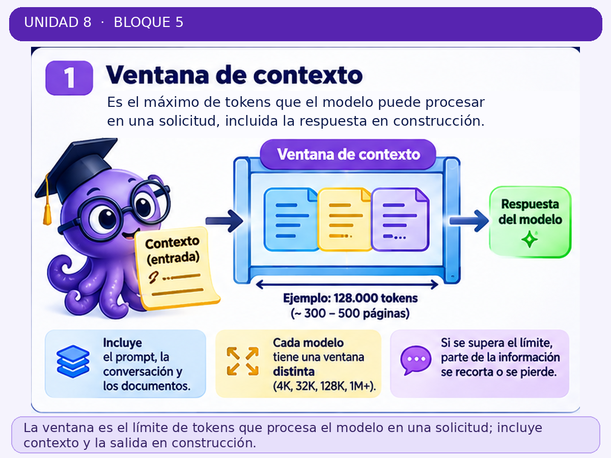

Ventana de contexto
La información que procesa el LLM tiene un presupuesto limitado de tokens. El historial que guarda una aplicación puede ser mayor que lo que se envía al modelo.

La información que procesa el LLM tiene un presupuesto limitado de tokens. El historial que guarda una aplicación puede ser mayor que lo que se envía al modelo.
